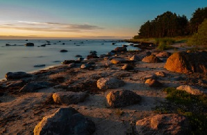

Baltic Coast Tour
Day 1 - March 15, 2025
At dawn
Distance: 85km
Elevation: +450m
Time: 4h 35min
Dawn broke over the coast as I packed my backbag. I will remember this scene for a along time, i quickly grabbed the camera to capture it. The light was changing fast, so I had to work quickly.
☀️ Clear skies, light northerly wind, 12°C
Today's Route Highlights
- Coastal fishing villages
- Pine forests meeting sand dunes
- Ancient wooden churches
- Harbor market lunch stop